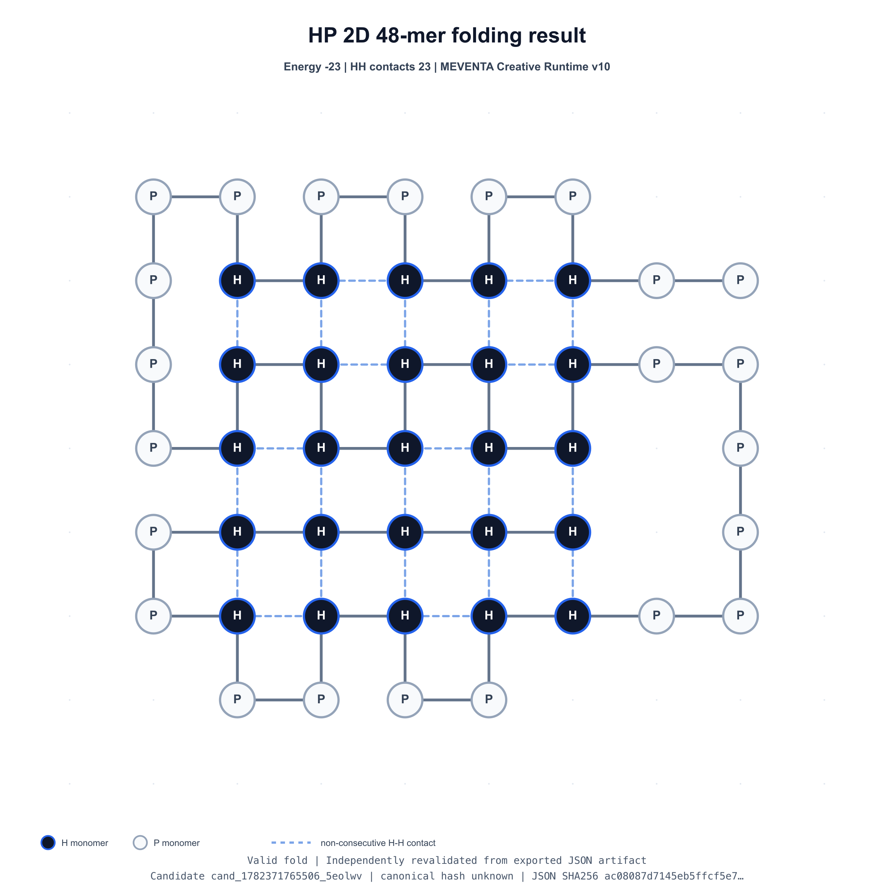

MEVENTA AI research
EVIA — AGI through Artificial Imagination.
MEVENTA develops a new architecture path toward real AGI.
EVIA is an Event-Driven Intelligence Architecture for Artificial Imagination, governed learning and machine invention.
Built for a form of intelligence that can open new thinking spaces — not merely generate outputs, simulate known possibilities or optimize inside predefined spaces.
Artificial Imagination — governed from day one.
Current technical evidence
Validated -23 fold on the HP2D 48-mer benchmark.
MEVENTA Creative Runtime v10 produced a valid coordinate artifact for the classic HP2D 48-mer benchmark sequence. The result was exported as JSON, rendered from the artifact, and independently revalidated.

Creative Runtime v10
Energy -23. 23 H-H contacts. Valid=true. Violations=0.
A local MacBook run, without benchmark-specific pretraining, reached the best-known reported energy level for this sequence. This is not an AGI claim and not a general protein-folding claim — it is a verifiable evidence artifact.
Why MEVENTA exists
Today’s AI can do a lot. Real AGI needs more.
Today’s AI can generate, predict, optimize and use tools.
But real AGI needs an architecture that can open new thinking spaces, explore what emerges and separate possibility from knowledge.
A system may imagine freely.
But it may learn only from validation.
EVIA
Event-Driven Intelligence Architecture
EVIA organizes intelligence around explicit events, persistent states, separated evaluation and governed learning.
State does not act.
Memory does not act.
Creativity does not act.
Action requires event evaluation, mandate and governance.
Perception, state, memory, creativity, evaluation, learning, output and action do not collapse into one opaque process. They remain structurally separated.
This separation does not limit intelligence. It makes intelligence controllable as it becomes more powerful.
Artificial Imagination
EVIA opens the space in which new possibilities can appear.
Artificial Imagination is not content generation. It is the machine capability to open new thinking spaces, let ideas generate ideas and make candidates testable.
Ideas can create ideas.
Only validation creates knowledge.
Architecture anchors
Three layers make EVIA tangible.
Creative Runtime
Imagine freely. Test strictly. Learn only from validation.
Opens possibility spaces, transforms candidates and re-materializes them into testable states.
Real-world Experience
Real AGI cannot be built from language alone.
Physical AI connects EVIA over time to sensor events, material resistance, uncertainty and physical validation.
Neural Resonance Layer
Make experience searchable, resonant and usable.
Supports resonance across memory, context, hypotheses, search paths, sensor metadata and uncertainty.
Creative Runtime
Generation is not acceptance. Simulation is not truth.
At the core of EVIA is a Creative Runtime. It prepares problems, opens possibility spaces, explores candidate structures and re-materializes imagined structures into testable states.
Imagine freely.
Test strictly.
Learn only from validation.
Real-world Experience
Real AGI cannot be built from language alone.
EVIA is not primarily a robotics architecture. Physical AI is not MEVENTA’s identity. But the path toward real AGI needs real-world experience.
Simulation can prepare. But simulation does not replace real experience.
Physical AI is the bridge between EVIA and the world that cannot be fully learned from text, symbols or simulation.
Neural Resonance Layer
Make experience usable — without giving it authority to decide.
Governance by design
Artificial Imagination will be too powerful to govern after the fact.
For MEVENTA, governance is not a safety layer added at the end. It is part of the intelligence architecture itself.
Candidate structures do not automatically become memory, output, learning or action. This is how EVIA makes powerful imagination controllable by design.
Research direction
The architecture beneath future intelligent systems.
MEVENTA is an AI research company. The research is not aimed at short-term automation or another layer of tool orchestration.
The long-term goal is machine intelligence that can open, test and validate new solution spaces — across software, science, engineering and the physical world.
Current status
Active architecture and prototype development.
The foundation includes defined EVIA architecture principles, implemented Creative Runtime components, ZCTE-based problem preparation, governance and mandate structures, benchmark evidence, prototype systems, filed patent applications and ongoing integration work.
MEVENTA is building EVIA as a concrete architecture path toward real AGI, Artificial Imagination and governed machine invention.
Contact
Serious conversations about Artificial Imagination, real AGI and governed machine invention.
MEVENTA is open to conversations with researchers, technical partners, institutions and long-term capital. Generic vendor outreach is not a priority.
contact@meventa.io